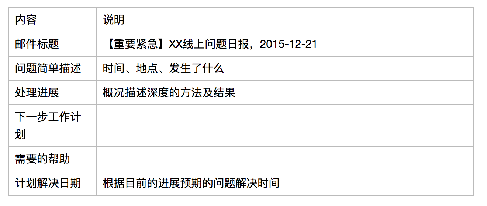

一、我是项目经理
A.给项目经理新手的五个建议
1.多想想项目到底需要什么
2.不要凡事恨不得事必躬亲
- 1）从自己做事到想办法让别人去做好它
- 2）成功施加影响三个要素：获知（Awareness）、动力（Desire）、能力（Ability）
- 3）获取理解及认同，激发动力是项目经理努力的关键，还要确保他有相应的能力来做好这件事
3.不要追在别人屁股后面做监工
- 1）跟大家一起把事情从头到尾各个环境理顺了，建立一套对应的流程规刚，明确各个角色在过程中的职责，并获得大家的认同，让这个机制自行运转起来
- 2）规则在约束大家的行为
- 3）解放出来的项目经理，就可以更进一步，致力于目标激励、团队建设等更高层面的工作，变“赶”为引
4.言必信，行必果
- 1）核心在于真正赢得团队对你的信任，建立自己的可信度，打造个人品牌
- 2）信任的获取是一件件事情中一点一滴的积累，没有捷径
- 3）专业上做足功课；言必信，行必果
5.不一定要强势，但一定要内心足够强大
- 1）尽可能让自己客观、公正
- 2）接受差异的存在，并与之共处；学会求同存异，找出一致的地方并努力放大
- 3）不一定强势，在一些事情 上可以让步、可以妥协，但内心一定有自己的坚持
B.项目管理境界之一二三
1.境界一：做项目
- 1）项目管理铁三角：范围、时间、成本和质量
- 2）一般项目管理工具、最佳实践的使用
2.境界二：懂业务
- 1）项目管理介入时间点需要前移，参与项目立项前的讨论
- 2）理解业务，能够成为业务部门可以依赖的左膀右臂
- 3）从业务角度出发 ，引导和参与规划、定义项目，提炼出项目，化被动为主动，清楚地知道为什么立项这个项目，它所带来的业务价值是什么，是通过衡量哪些不同方案和利弊后才做出这样的选择的，外部环境有什么样的制约
- 4）只有自我认同项目的价值，才能在后续项目执行、讨论过程中遇到问题时能够说服其他项目成员，也能够获得其他人对项目目标的认同
- 5）可以引导业务部门做出一段时间内的规划图（roadmap），促使业务部门从业务发展的角度去思考未来一段时间该领域最重要的事情是什么、项目做成后将有什么样的收益
- 6）项目经理能够想业务之所想，从业务角度出发去做项目，也能够权衡项目对业务部门的重要性
- 7）懂业务不仅是指对业务领域熟悉，还包括对实现其业务需要的产品方案的了解，知道使用哪些技术来实现，以及对技术实现过程中的难点和重点需要有清晰的把握
3.境界三：懂人
- 1）同一业务领域中前后不同项目参与的人员基本相同，但人员的诉求各不相同，如果能在项目的交付中结合个人的诉求，既能交付项目，同时也能满足项目成员的个人发展要求，将是大家乐于参与的项目
- 2）需要带着同理心去交付项目，“士为知己者死”
C.估算那些事儿
1.行百里者半九十
2.估算不必花费大量的精力强求精确，只要做到尽量合理、尽量贴近真实值即可
3.估算单位的选择
- 1）理想人日：成员不受干扰的情况下，全部时间都用于开发需求所需的天数
- 劣势：小组成员对技术和项目的熟悉程度、个人的经验和能力不同，会导致基于理想人日的估算值有一定差异
- 优势：对于团队外部的人来说，理想人日更容易被理解 ，无须解释。对于团队而言，它使估算更容易开始
- 2）理想人时：对应人日的粒度更小，在熟悉需求的情况下，估算会更准确些
- 劣势：对于一些大的需求无法做到如此细的粒度
- 优势：在充分理解需求的情况下，能帮助团队做到更靠近真实值的估算
- 3）故事点：对任务规模的估计，是一种相对概念
- 劣势：一方面由于编程语言不同或者业务分块，大家很维找到一个共同熟悉的需求作为基准，那么用故事点作为估算单位的方式就很难开展了；另一方面，故事点相对于其他估算单位更难被理解 ，这也使估算难以开始
- 优势：一方面，基于故事点的估算更纯粹，不会因为开发人员的变更、时间的推移而改变；另一方面，由于人们往往更擅长于相对估算，所以故事点会让估算更迅速
4.估算的几种常用方式
- 1）自下而上的估算
- 开发人员自己估算任务时间，然后汇总，并考虑依赖关系后排出计划
- 适用于：成员间业务独立性强，相互之间的业务熟悉度不高且熟悉成本较大，较难进行共同估算；各成员的经验相对丰富，对自己的任务能进行较准的评估
- 2）专家判断
- 由一个或多个专家根据相应开发的情况给出任务的估算值，但前提是你能找到这样一个熟悉整个项目所有业务和整个项目团队成员的专家或专家组
- 一般由开发领导者来充当这个角色
- 通常不需要太多的时间，省去交流成本；准确度有一定的保障
- 3）扑克估算
- 以扑克牌的形式进行估算。估算开始前，每个估计者会分到一叠扑克牌，每张上有一个数值，如0，1，2，3，5，8。然后由负责人对某个需要进行估算的需求或者任务进行讲解，讲解完之后，所有人可以向该负责人提问关于该条需求或任务的问题，直至足够了解，然后所有成员各自挑选一张扑克牌代表自己对该条目的估算
- 好处：集合了所有团队成员的意见，比一个人估算少了很多主观成分；在估算过程中，强化和深化了大家对需求和任务的理解 ，将任务考虑得更加细致，降低了不确定性给计划带来的冲击；这种形式使相对严肃的计划和估算变得更加有趣，但是不得不承认，这需要比前两种方式更多的时间成本
- 适合：能够找到一个故事作为基准，编程语言一致，有能力评估同一个需求
- 演化：当团队成员间对某个需求和工作量有较大分歧的时候，就可以让团队采用这种方式来达成一致
5.需要注意的点：
- 1）估算仅仅是一个预测，完成时间最好提供一个日期范围，让听者知道你的估算只是预测
- 2）不管用你来么估算方法，将任务分成更细粒度总是有利于估算的
- 3）团队需要练习估算方式并且收集反馈（复盘）
- 4）估算需要反复进行，当项目进行一半发现估算过于乐观了，就需要对剩下的工作进行重新估算
- 5）当发现团队成员经常过于乐观或者过于悲观的时候，我们需要采取相应的措施
D.工作时间打扑克？——扑克估算
1.为什么要做估算
- 1）用户需要一个预期，甚至是承诺
- 2）管理层需要可预测性，某些决策需要基于估算而做出
- 3）团队需要了解如何相互协作，在哪个时间点能够拿到所需要的接口或素材，据此相应地规划并安排自己的工作
2.为什么选择相对估算
- 1）相对估算更符合人的本能认知
- 2）本能认知能让估算过程变得更快
3.相对估算需要转换为人天吗
- 1）在实施Scrum的项目团队中，最后得出的故事点的数值，不需要再转化成人天
- 2）在Scrum项目中，周期是事先约定好的。每个迭代的计划不需要确定日期，而只需要估算下一个迭代我们能完成多少工作
- 3）在几个迭代之后，我们就会得出一组相对数据，来衡量团队的生产效率。根据这个生产效率，我们可以很容易地快速进行相对估算，不需要转化为具体人天就能得出结论
- 4）如果是第一个迭代可以转换为人天找找感觉
- 5）如果是在传统项目中做扑克估算，可以直接用人天进行估算
4.扑克估算有什么好处
- 1）团队一起做估算，估算更全面细致：每个人出牌，都从自己的角度出发，互相补充
- 2）团队一起做估算，需求探索更深入：公开讨论，进一步挖掘和明确需求
- 3）团队一起做估算，有助于优化解决方案：交流解决方案的好时机
E.走一步看三步——怎么做好进度计划
1.“没有战争是根据计划而胜利的，但是没有计划，战争也无法胜利”——艾森豪威尔
2.别怕做计划
- 1）“严格约束下的创作会将想象力的翅膀完全伸展 ，并迸发丰富想法；在彻底自由下创作可能使作品散作一盘沙”——T.S.艾略特
- 2）排斥做计划的原因在于人们不愿轻易做承诺。人人都有言行一致的愿望，一旦做出承诺，来自内心和外部的压力会按照我们按照承诺去做
- 3）因为计划的执行有问题，就不去做计划，这种逻辑无异于因噎废食
3.计划要趁早
- 1）“越有太多不确定，越应该给出计划”
- 2）项目经理应该做头一个挖坑的人，引导团队拨开重重迷雾，将所有不确定一一落地
- 3）好的计划必须领先于项目实际，要有一定的预见性
4.调整计划要谨慎
- 1）计划永远是个反复修正、渐进明细的过程
- 2）计划的调整要谨慎，天天调整的计划会推动公信力
- 3）最重要的是，要确保项目中每个人知道当前的计划是什么，调整计划需要怎样的决策过程，需要谁参与决策
5.计划诞生记
- 1）项目立项前
- 可将目标按照功能体系分割成几个重大里程碑，并给出里程碑完成的时间点预期
- 立项时间表使得项目各资源方有了明确的预期，以便提前做好资源调配
- 2）项目立项后
- 各项人力资源逐步到位，根据团队生产力的经验估计，结合启动过程中对里程碑的大致预期，进一步推导出需求确认、设计确认、功能完成等中间节点
- 3）需求确认后
- 由设计、开发、测试一起做WBS，将工作细化分解。明确时间点：设计确认、功能完成、零缺陷（Zero Bug）、发布前代码冻结（Code Freeze），以及里程碑完结日期
- 里程碑计划基本成型
6.别忘了完成标准
- 1）完成标准就是该时间点需要完成的事项列表，或应该达到的某项指标（特定水平的BUG数量/性能指标等）
- 2）里程碑中最关键的几个时间节点完成标准：
- 需求/设计确认：执行所需的需求稿/设计稿已经完成（不一定是全部完成），团队已准备好编写产品代码
- 功能完成：所有定义的功能都已经完成（冒烟测试通过），团队将焦点转移到质量保证上，所有剩余问题都将作为BUG来追踪
- 里程碑完成：质量已达到适当水平（如不存在高优先级BUG），可以上线发布，或开始下一个里程碑
7.克服估算焦虑
- 1）只有进行粗略估算才能拥有一个起点，以做更好的估算
- 2）大多数人利用直觉的本能反应来进行估算，通常是小团队短周期的项目，这种估算可以起到很好的效果
- 3）昨天天气法（Yesterday’s Weather），通过分析团队的历史数据，得出生产率的估算
- 4）零缺陷时间点估算：当前有效BUG数+测试新报速率*X天=开发修复速率*X天
8.怎样做好计划
- 1）好的计划一定是团队共同参与才能制订出来的
- 要想让承诺更加有效，它必须得是当事人积极的、公开的、且经过一番努力后自由选择的
- 2）善于规划的人，会把里程碑分割成一个个小的阶段，分而治之
- 方向越容易改变，变更越频繁，迭代的长度就要越短
- 3）好的计划必须跟进
F.我们是如何开每日站会的
1.每日站会<>汇报会
- 1）每日站会是团队沟通交流的平台，用以分享信息、做出承诺及提出路障（遇到什么困难，需要哪些帮助），解决的是团队协同的问题
- 2）是团队自主进行状态同步、风险管理及制定各项决策的非常重要的实践形式。团队通过站会来了解整体状态，并对暴露出来的风险和问题做出集体决策
- 3）一个组织良好的站会，是出于团队的自组织需要，而不是领导者的监控需求
2.为什么需要真实白板
- 1）抛弃了冰冷的计算机，大家总算真正面对面了，互动和交流都变得生动和开放起来
3.为什么要站着讨论
- 1）好处：
- 站着的时候思维会比较活跃
- 站着有点像在做演讲，这种能力平时就应该培养起来
- 站着大家容易做手势
- 站着防止打瞌睡
- 促使人们更加开放，更愿意吐露心声，更愿意讲真话
4.“三张牌”式站会法
- 1）一个站会开好，需要一个主持人来把握会议的节奏
- 2）“红黄绿”三张牌：
- 举“黄牌”，进行相关提问，向发言者了解协同及依赖的信息
- 举“红牌”，用来打断谈话，避免考完试的讨论和无结果的时间浪费，提高站会效率
- “绿牌”则代表着每个人的发言权，将此牌归还给主持人表示陈述完毕
- 3）当所有的“绿牌”都已归到主持人手中，且无更多疑问时，则宣告站会结束
5.实践过程中的持续改进
G.我的站会感悟
1.感悟一：一种仪式
- 1）暗示你必须要认真地去对待这件事
- 2）帮助团队快速进入工作状态
2.感悟二：核心习惯
- 1）核心习惯是可以启动团队的良性循环、逐步驱动团队重塑好的行为模式
- 2）站会中，会固定的同步任务的状态是否按计划进行、当前有什么风险和问题、确认需求变更
3.感悟三：高效的会议模式
- 1）清晰有效的沟通绝对是成功的关键，IM通信工具、邮件都有不足，必须是项目同步会这种方式，相比冗长的座谈会，15分钟的站会是一种高效模式
- 2）固定安排时间，减少召集会议所花费的时候，早上也是一起开会最容易的时间
- 3）站着开会一旦有人跑题或长篇大论，与会上的其他人员就会出现明显的肢体动作，于是话题容易重回重点
H.白板的艺术
1.选择物理白板的原因：
- 物理白板可以任意定制
- 物理白板需要团队的协作
2.白板概览
- 1）5行：
- 运维上线相关任务（日常更新、线上缺陷）
- 开发（普通开发任务，含前端、测试等）
- 测试（独立的测试任务，如测试用例完善、测试代码完善等）
- 前端（独立的前端任务，如页面优化）
- 分享（内部技术分享等）
- 2）4列：
- 还未开始的任务（Open）
- 进行中的任务（In progress）
- 开发完成待验证的任务（Resolved）
- 验证完毕的任务（Closed）
5.纸条颜色的讲究
- 1）运维上线相关的任务会用红色方形纸条，尤其是线上BUG
- 2）一般的开发任务、独立的测试和前端任务、分享都以淡黄色方形纸条标记。其中开发任务如果需要相应的前端任务配合，则在该纸条上方贴上一长方形蓝色纸条标记；如果有对应的测试任务，则在纸条下方贴上红色的长方形纸条
- 3）有设计文档、API文档测试用例的任务，会分别用绿色笑脸、黄色笑脸、红色笑脸来表示
- 4）新增任务、迭代计划外加入的任务会用蓝色纸条跟进。迭代总结时会对新增任务的工作量进行统计，用以指导后续的计划
3.纸条内容的组成
- 1）任务概要：知道要描述任务内容
- 2）估算工作量：简要描述任务内容
- 3）负责人：姓名接单首字母
- 4）实际工作量：当任务完成后由相应开发人员回忆实际的工作量，数字外围画个圈，以区别于估算工作量
4.燃尽图
- 1）燃尽图往往用来呈现实际情况与理想情况的偏差，可以提示我们风险的存在
5.目标
- 1）白板上放置目标能帮助团队往同一个方向努力
- 2）项目成员往往不清楚目标是什么，只是在完成任务，对产品的全局没有清晰的认识
- 3）一个中长期的目标和每个迭代的目标，让大家看到自己所做的事情在全局中处于什么样的位置，看到团队未来的方向在哪里
- 4）当被某个任务阻塞的时候，大家可以根据目标来自己判断是不是影响该目标的达成，如果不，那么这个任务可以稍缓；如果是，那么就要赶紧提出风险，大家一起来想办法解决
6.信心指数
- 1）显示了目前团队对于成功的交付所持有的信心，往往能帮助团队发现一些潜在的问题，及时地进行调整
- 2）比如在站会的时候，每个人对完成目标的可能性来投票：5=绝对能，4=有可能，3=有点悬，2=不太可能，1=拉倒吧
- 3）只要结果中有2或1的话，可能就提示我们需要重新评估目标，并讨论需要做什么改变来提升信心。常用的方法有：消除障碍，帮助解决瓶颈问题，缩小范围，调整目标，更加努力地工作
7.倒计时
- 1）在白板醒目的位置，以红色字体标识出来，是为了提醒我们离终点还有多少时间，必要的时候通过时间和剩余工作量的对比来发现问题
8.关于白板我们必须明白
- 1）对于物理白板，可以使用电子白板做备份存档
- 2）对于不在一起办公的团队不太合适
- 3）不要一次增加太多规划，最好一次增加一种规划
- 4）不要增加太复杂的规则
- 5）项目类型的不同也会影响对白板的设计
I.不简单的周会周报
1.周会
- 1）三种形式：全体类、组长类、三方类
- 2）为什么要开周会：
- 面对面地感受项目当前的整体状态、重要问题、接下去的目标以及所需的调整
- 借此来对项目当前重要问题有一致和认识，进行小幅度的讨论，并形成下一步工作事项
- 3）开好周会的要点：
- 控制规模和时间
- 要不要轮流汇报？
- 如何识别周会该讨论什么？跨团队的、涉及整体计划性或者协同配合型的问题、中期改进型问题，“火花”型问题的快速讨论
- 确定状态同步的维度：按照产品内子项目线的维度来跟进进展，挖掘问题
- 控制说话比例：1:1:1，主持人（项目经理或主管），汇报的与会者，所有与会者参与讨论发言
- 固定时间地点
- 如果我们已经有每日站会了呢？视项目情况，如研发已经有每日沟通了可以适当减少时间或者直接取消
2.周报
- 1）三要：
- 要包括：整体进展、整体风险、各子线状态、各子线风险
- 要进行换位思考：多从报告接收者的角度进行思考和准备相关材料
- 要有提炼数据的关键信息
- 2）三不要：
- 篇幅不要过长，控制写周报的时间和复杂度，适当图形化
- 不要有令人惊讶的内容
- 不要直接拷贝粘贴你下属的报告
J.让你的报告会说话——如何有效、有料地进行工作汇报
1.工作汇报的目的
- 1）将状态、问题、风险知会相关干系人，这是任何状态汇报都需要满足的最起码要求。会议可以通过类似小迭代、不断改进的过程来探知和摸索出适合相关人员的状态汇报
- 2）寻求帮助
- 3）自我审视：时间管理就是目标管理，在个人的时间瓶中是否先放入大石块，然后是小石子、沙子，最后是水？
2.个人工作周报
- 1）本周工作完成程度：不仅描述，还要结果
- 2）下周工作计划：描述，预期结果，“Definition of Done”，即需要对“完成”有一致的理解
- 3）工作中遇到的问题及建议
- 4）个人感悟
3.团队工作周报
- 1）上周已达成的结果（跟计划相比如果有差距，则列出如何改进）：量化的结果指标
- 2）未来一段时间的规划图：通过图形化的方式言简意赅的列出任务的时间点和期望达成到的结果
- 3）达成如上规划图的风险/需要的协助：资源风险、合作方风险及建议的应对方案
4.项目状态报告
- 1）项目日报：适用于项目中紧急情况下的某个问题/项目报告，如重点项目、线上问题、重大客户投诉问题等。为了让更多项目干系人了解情况，寻求他们的帮助

- 2）项目周报：常规项目状态报告，包含项目的主要度量指标等信息（进度状态、问题、风险、质量指标等）

- 3）项目集周报：同一项目经理负责范围内的多个项目，为了方便报告接收者阅读和对比所有相关项目信息，建议以一个总体表格的形式进行汇报
- 4）项目月报：适用于向高层领导、客户报告项目状态，高层次、概括性地介绍项目相关信息
K.项目管理<>烦琐的会议
1.开会前搞清楚三个问题：“达到什么目标”、“解决什么问题”和“需要得到哪些人的帮助”
2.开会要有充分的理由，比如：
- 需要团队就某一个问题提出他们的想法和建议时
- 需要团队参与决策或解决问题时
- 需要团队来解决一个仅通过一对一的交流方式无法解决的问题时
- 需要和整个团队一起共享信息、分享成功或排优解难时，或是想要每个团队成员都意识到这是一个特殊时刻时
- 需要来自不同团队的那些有着各不相同的观点的团队成员集思广益来解决一个问题时
- 需要明确由谁来对所出现的问题、所造成的麻烦或者所涉及的领域负责时
- 发现团队成员觉得非常有必要开会时
3.没必要开会
- 要讨论的是私人问题，比较适合采用一对一的方式解决
- 你没有足够的时间去准备会议
- 其他的沟通方式能收到与会议相同的效果，或者比会议更好的效果，如通过E-mail、QQ群讨论，或者打电话的方式等
- 会议的方是不值得浪费所有与会者的时间
- 团队之间的关系一团糟，还不能通过会议达成一致、做出决策时
4.应该邀请谁？
- 对于所要讨论的问题有关键决策权的人
- 对于所要讨论的问题有相关知识和信息的人
- 一心一意要解决问题的人和与所要解决的问题休戚相关并有重要作用的人
- 有必要知道你所要传达的信息并有利于他们进一步开展工作的人
- 需要执行决策的人
5.会议议程表：
- 明确的会议目的
- 会议欲实现的目标或产生的结果
- 给哪个小组开会或者与会者都有谁
- 开会的日期、时间和地点
- 会议将持续多长时间
- 会议是由谁组织召开的
- 每个与会者在这个会议中分别承担什么任务
- 会议所要讨论的每个议题（每个议题都要具体制定负责人，而且要规定讨论的时间）
- 筹备阶段所需的背景资料
6.如何主持会议？
- 在会议一开始就要进入主持状态，清晰地陈述会议的目、会议所有讨论的问题，以及会议的步骤
- 按时开会。不等人
- 严格按照议程表主持会议
7.如何按时结束会议：
- 让一个团队成员来做计时员
- 每隔一段时间提醒大家一下还剩多少时间，还有几个议题没有讨论
- 如果时间不够了，就优先或者推迟讨论某些议题
- 如果需要延长会议时间，应先征得大家的同意，或者也可以另行安排一次会议来处理剩下那些没有解决的问题
8.如果对会议收尾：
- 所要讨论的关键问题
- 所做出的决策
- 下一步计划如何实施
- 每个任务分别由谁来负责执行
9.会议弄得成功与否关键在于会后跟进工作做得好与坏。关键是会议上形成的沟通和行动计划，包括三方面的因素，即什么事、谁、什么时候完成：
- 会上做出了哪些具体决策，产生了什么结果，以及会后应该完成什么样的任务？
- 由谁来负责执行这些任务？
- 什么时候完成这些任务？让与会者对于承担的任务制订一个较为合理的工作计划


L、高效回顾，引导团队从优秀到卓越
1.常见的回顾会形式：
- 与会人员用便笺纸写下项目过程中做得好与不好的的5个点，按照分类贴在白板上，确保大家的意见能够充分自由表达
- 在白板前逐条看大家的意见，共同发现问题，并有针对性地展开讨论
- 对大家总结出的好/不好的点，进行集体投票
- 由项目经理整理投票结果，好的方面总结成最佳实践予以推广，不好的方面加以讨论
- 得出流程改进方案
2.回顾会的典型过程是发现问题——分析问题——解决问题，核心在于根源分析以及决定改进措施
3.如果高效聚焦、形成结论
- 1）选择合适的主题：建议在各个迭代中，主题性回顾和“正常”回顾会穿插进行
- 2）回顾会该有多长：推荐为1.5小时以内，不超过2小时
- 3）怎样发现问题：限制发现问题的时间，不超过1/3的时间，提前收集或者回顾时间表列问题列表，挑选重要问题做改进
- 4）如何调节会议基调：
- 分角色：“问题解决者”、“学习者”、“游客”、“囚徒”，重点关注囚徒，如果学习和游客多则是会议是否准备充分，问题解决者说明带着明确的问题参会
- 面对众多问题，能够完美的解决一个，就够了
4.回顾会措施的落地：
- 团队长期共享一份持续改善的检查表，表中包含正在改进中的问题和事项，也包含后续待改善的问题
- 回顾会开始时，检查进展。检查上一次回顾会议的效果
- 回顾会议结束时，为每个行动指定一位负责人，更新检查表
M.项目从零开始
1.项目管理不仅要根据相应的方法论依葫芦画瓢，更重要和重具有挑战性的工作是在项目执行过程中人员间的协调、沟通、冲突处理、加强团队凝聚力等与人密切相关的部分，只有相互信任的团队才能到达项目顺利交付的彼岸
2.如果对项目背景、团队成员不了解的话，是举步维艰的，更别说按时交付项目了。所以不论你接手的项目多么紧急、多么重要，作为项目经理的你需要开展一些一对一的或者一对多的访谈，带着同理心去聆听大家的反馈，并适时引导大家朝正确的方向前进
3.面谈的问题列表：
- 部门的愿景是什么（或者项目的目标是什么）？
- 目前项目或部门中的主要风险/问题有哪些？
- 目前的工作方式/流程是怎么样的？团队成员的分工是怎样的？
- 目前质量衡量指标有哪些？
- 影响项目成功的关键因素是什么？如何界定项目成功？
- 对项目管理的期望是什么？
4.改变从试点项目开始
- 1）试点项目的选取
- 试点项目要具有典型性和代表性，其中包括项目规模、人员构成、时间长度、结果跟踪
- 试点项目要得到业务部门领导的支持和授权，让领导们明确知道这是试点
- 试点项目团队成员需要知道自己身处“试点”之中
- 2）试点项目的执行、数据收集与分析
- 目的明确，需要针对性地收集数据
- “无量化，不管理”
- 3）项目人力支出
- 让部门总监知道不同项目的人力投入，以及这些项目所带来的收益是否值得
- 4）项目规模变化
- 5）线上BUG
- 6）及时交付率
5.建立基本的项目管理流程和度量体系
- 1）项目集路线图机制
- 设立部门重点项目集管理，通过每两周一次的产品路线图会议来对项目集中的每个项目状态在核心主管团队中进行回顾，以评估当前的重点项目是否有风险/问题，以及是否有新的项目需要纳入重点项目集中
- 一旦重点项目立项，那么需要保障人力来交付项目，如果其他项目或事情需要挤占重点项目的人力并且影响重点项目交付的话，就需要部门CTO批准了
- 2）三步评审法
- 策划需求评审：用户场景描述、技术可行性、项目期望的交付计划
- 交互/视觉评审：阐述用户的交互体验
- 上线评审：各方判断是否可以上线、准备启动上线后的相关活动
- 3）形成每周固定上线节奏：建立比较完善的CI系统
- 4）最小度量数据集+闭环跟踪指标
- 人力支出：站会上收集项目成员投入本项目的人力占比，单位为人天，用于衡量项目的基本人力投入
- 及时交付率：用于统计项目延迟/及时交付的情况，计算公式是：（项目实际上线日期-项目计划上线日期）/项目计划时长
- 项目规模变化率：可以使用人天或者故事点来衡量项目规模，规模变化率是指项目实际所花费的人天或故事点除以计划的人天或故事点，用于衡量产品方案的完备程度
- 线上BUG：用来衡量项目质量的一个主要指标，记录线上BUG数量和严重程度（P0，重要性高的服务功能不可用或功能异常，大面积影响用户；P1，重要性高的服务功能不可用或功能异常，影响有限或重要性中等的，但大面积影响用户；P2，重要性中等的，轻微影响用户体验）
- 5）全员培训
- 流程和项目最小数据集：解释为什么要进行项目的最小数据量度量，每个历史数据将如何使用
- 成员职责说明：项目和产品经理的职责区分
- 不同项目类型的定义：对重点项目的评选机制、变更流程进行重点说明，让大家清楚哪些是重点项目
6.项目管理的反馈：每半年对业务部门全员进行匿名反馈
7.项目管理的下一步：
- 及时交付项目是对项目管理的基本要求，持续优化项目管理相关流程是项目管理的本职工作
- 项目中硬性的东西（如流程规范、度量指标、工具使用等）相对而言是比较容易建立的，而团队中软的东西（如团队文化、激情和士气、认同感等）是需要长时间的引入改变
- 1）打造相互信任的自组织文化：特性团队指承担端到端交付任务的、长期的、跨职能成员合作的一种团队形式
- 2）减少浪费：应用精益创业中最简产品（MVP）概念来验证需求将会使“大”失败更少一些，为公司节省资源和费用
- 3）闭环反馈：是为产品、市场、运营活动提供结果跟踪、意见反馈的跟踪手段
- 4）教练机制：主要职责是挑战和激发团队成员的潜力，把团队中的问题真实的反映出来
8.在弱矩阵下的项目经理是一个成本中心而非利润来源，项目经理的价值是通过提高团队的效率、提高项目成功交付率而体现的
N.悬崖边的舞蹈——小议风险管理及在互联网项目中的应用
1.管理的核心是“信仰的伦理学”——风险管理要求我们对于项目推进的每个信念都必须接受伦理的质问，只能够相信那些真正靠谱的，而将所有的质疑和信心动摇点逐一甄别出来
2.致命风险
- 包括但不限于：投资方撤资、大老板改变主意了、竞争对手率先发布同类产品、行业市场状况急转直下等
- 致命风险超出了项目经理的职权范围，只有用“项目假定”才能管理它们
- 识别它们，说明它们，向项目发起人转交它们
3.转化监控：在最初的风险识别和初步规避措施之后，我们依然需要去分析各项风险出现的可能性，并设定转化指标，做好长期监测
4.真正的里程碑目标应该是一张风险图，或简单的风险倍数表格，如人事变去、需求改变、工作上的障碍之类，这些风险倍数让你更准确地估计完成日期和需要多少故事点数（Story Points）

5.昨天的问题就是今天的风险，你的问题很可能就是我的风险
6.只相信我们有权相信的，质疑我们应该质疑的，说出我们的质疑，观察并应对我们的质疑，这就是风险管理
O.心的修练——项目沟通的四个原则
1.原则一，主动尽早
- 只有把问题摆出来了，才能调动大家的力量来迟早解决问题
- 迟早了解可能存在的问题，一方面可以避免向客户传递潜在有误的信息，另一方面可以为团队争取到最及时有力的帮助来解决问题
- “项目经理，就是要悲观面对项目，乐观面对团队”
2.原则二，抓住本质
- 如果纠结于“需要”，沟通就容易陷入泥沼；而如果聚集“需求”，那就容易达成求同存异
- 只有透过现象看本质，才能在沟通中真正求同存异
3.原则三，共情引导
- 理解和接纳对方的情绪，充分引导对方把问题和情绪表达出来，也就开启了沟通的大门
- 以共情为基调，需要在陪伴的情绪中洞察问题根源和解决突破口，并适时加以引导
4.原则四，完整解决
- 项目沟通需要在时间维度和沟通对象维度有计划地做拓展，来为解决问题服务
- 完整解决，并不是具体的沟通技巧，而是如何完整地安排沟通以及使用不同的沟通方式来解决问题
- 要做到完整解决：首先要有强大的愿力和强大的内心；其次要有敏锐的洞察力和审时度势的能力
二、调度延伸
A.项目启动阶段，项目经理何去何从
1.其实很多时候产品总监是不会主动来问你要不要帮助的，只有自己拿着需求和依据去找产品总监，产品总监才会给予支持
2.当一件事情被提上议程，它的进度往往会比较快
3.有时候你不去问，别人是不会主动来告诉你他的想法的
4.其实需求制定是由需求人员负责的，在团队成立初期其他人可能不会主动表达自己的意见，一方面是怕得罪需求人员，另一方面，不是自己的东西，也懒得去提意见，做得不好也不是自己的责任
5.团队组建、自我授权、需求可视化、固定沟通渠道
B.产品初创阶段，项目管理该做什么
1.产品初创阶段的几个特点：
- 开发过程中的需求往往变动较多
- 较多需求亟待市场验证
- 缺人缺人缺人，时间紧时间紧时间紧
2.尽量缩短迭代，尽快交付成果
- 每两周一个版本做出一些可见的东西，并且提交给偏用户的内部角色，如运营部，来体验产品的功能，并且提出反馈
- 阶段性地再邀请公司内的非本产品的人员来体验和反馈
3.建立通畅的反馈渠道
- 1）内部用户反馈
- 两类用户：一类是团队内部的运营人员，另一类是公司人员
- 集中会议的形式更有效
- 在一个大版本结束后，邀请公司内部的目标用户来参加试用，有时还会邀请一些专家
- 2）外部用户反馈
- 两类反馈：一类是上线前的可用性测试，另一类是上线后运营整理的每周用户反馈报告
- 可用性测试：用研团队，邀请一些产品的目标用户，做一次深度的试用和访谈，主要侧重在用户体验和需求设计上的反馈
- 每周用户反馈报告：运营整理
4.工具轻量化
- 1）任务管理工具轻量化，有道云协作+JIRA
- 我们推荐将需求细化，所以每个需求都有对应的任务
- Bug考虑到后期需要统计分析，所以接入JIRA
- 2）文档轻量化
5.全员招聘：团队全员参与招聘
C.项目初创期，如何帮助项目走上正轨
1.制度流程可以看作人与人之间合作的游戏规则，由于身处在团队合作中，需要跟大家一起协作来完成项目
2.因为每个人的工作习惯不一样，有时候会产生摩擦或者问题，所以我们就需要约定 一个共同遵守的流程，并结合之前 的经验教训归纳起来，避免下次再犯错，这就是制度流程
3.流程是为了提升效率，终究是为人服务的，而不是人被流程制度所掌控！所以一味照着流程来做，很可能会流于形式，那流程存在的意义就会大打折扣
4.从轻做起，一开始其实不适合把一整套流程搬过来套用。通常是有遇到相对应的问题、有新的业务、新的团队出现，才考虑建立流程
5.一个好的制度，需要让团队很容易找到且条理清晰。所以在建立项目的文档库时，就应该跟着流程来建立结构 ，方便大家查找
6.一般来说互联网项目会随着项目成长经历这些环节：需求、交互、设计、计划、开发、提测、上线、hotfix、解决线上事故、日常运维、运营等，每个环节可能都是独立的岗位，人与人协作就会出现问题，这时候就需要流程
7.常见的流程主要有：
- 需求管理
- 变更管理
- 提测流程
- 测试流程
- 上线流程
- hotfix及线上除Bug流程
8.变更流程范本：
- 1）产品策划或开发针对需求与设计有变更 ，发起人要先与产品策划讨论，确认是否变更，并确认方案（有个初步交互稿或交互设计）
- 2）召集总负责人（可选）、策划、项目经理、交互 、视觉（可选）、相关模块负责人、QA召开需求讨论会（看变更大小，采用会议、站会聚集讨论等形式）
- 3）各方确认是否同意变更，还需要邮件群给开发组邮件群
- 变更多或重大，影响工期，还需要邮件群给开发组邮件群
- 变更小，JIRA跟踪即可
- 4）JIRA依流程走，即待交互稿、视觉方案确认后（可选）、交给前端或相关开发人员
9.流程执行与监督
- 1）取得共识。应该要和项目负责人甚至上层总监、各负责人等确认这个流程是大家同意的、愿意遵守的
- 2）发布通知
- 3）详细解说
- 4）执行与监督：当发现有工作没有照着流程来做，应该先了解原因，然后让大家照着流程修正依照流程执行
10.选择好适当的项目管理工具，让流程自己转起来
11.很多项目是因为业务的独特性，才形成自己的流程，不可以一味照搬，而是需要裁剪以使其适合自己的项目
D.欲速则不达——冻结制度小谈
1.一味求快，往往容易忽略事物本身的发展规律，甚至因为过快导致各环节质量下降，后期疲于奔命等
2.单次迭代内适当克制，小步快跑，让长期目标得到更快响应、更快见效
3.需求冻结
- 1）需要适当凝结需求以满足快速交付的要求，为下次迭代中快速响应新变化留有余地
- 2）需求冻结指的是影响迭代交付等的需求冻结，并不是拒绝变化 ，具体需要团队自身去评判
4.代码冻结
- 1）冻结代码，代码另起分支准备发版之用，但并不是完全停止代码更新。允许谨慎可控的缺陷修复等
- 2）代码冻结期，原则上禁止新增任何需求或者任何调整功能点的开发任务
- 3）一旦代码冻结，所有修改必须经过慎重评审确认后再提交
- 4）代码冻结并不是时间越长越好，而要顾及整体的迭代进度，尽量在一个月的迭代周期内以合理的时间、成本去执行代码冻结
5.制度补充
- 1）需求：前提是需求的质量高，建议将需求评审拆分
- 小评审，尽可能点对点沟通
- 大评审和最终需求确认会，意义在于将全局信息传递到全体项目组成员，确认后会进入需求冻结
- 2）代码：代码冻结只是保障版本质量最后的几道屏障之一，不能把所有的质量都寄希望于代码冻结阶段去解决
- 重视平时的提测质量及开发自测等
- 重在平时习惯养成
- 3）规则：冻结后异常情况处理的规则需提前明确并广而告知相关项目组如超过需求冻结点、有需求的变更或插单等，技术团队不得私下接单，要走申请流程并告知相关人员等，同时需明确，如果破坏规则导致相应的后果该如何承担等
E.当所有需求，涌向我的时候
1.给项目经理们提了两个问题：你的项目是如何接受新需求的？你的项目是如何应对需求变更的？：
- 1）几乎所有的项目在需求管理上都不是强流程，而是用适合各自的办法来形成研发排期
- 2）需求管理的承载形式主要有两种：JIRA中的Backlog或Remine中的任务列表，维基中手动维护的需求列表
- 3）产品主导的项目中，需求管理的负责人往往是策划团队（产品经理团队），这种情况下需求管往往较为和谐
- 4）运营力量较强的项目中，需求的决策往往需要由产品总监、主策、主运营以及项目经理所组成的核心团队来共同讨论确定，这种情况下往往多了些纠结争论，有时需要经过多次协同才能得到结果
- 5）对于变更， 一部分项目采用了分类处理的方式：对于大部分中小粒度的变更，进JIRA记录并发大群通知，直接执行；对于重要变更，建立控制委员会（包括总监、主策等）进行评估把握。其他部分项目，采用了简单的负责人审批方式来应对变更 ；更有少数项目，几乎对变更不加控制，交由一线团队自我决策
- 6）对于来自高层的需求或者变更，往往拥有较高的优先级
2.上述情况的建议：
- 1）流程可以不强，但不可以模棱两可或者朝令夕改（提炼、记录、传达）
- 2）这里更关键的是人，而非流程本身（落实需求和变更决策谁或谁们来负责）
- 3）能够让人有效运转起来，不仅要职责到位，更需要一些基本原则和理念的统一
- 4）需求管理是产品流水线的源泉，也是研发项目最大浪费的根源
- 5）变更管理不是一成不变的方式和准则，它要随着产品生命周期以及重点诉求的变化 而变化
3.变更管理由形入神：
- 真正之于团队有益的并不是一套运作框架，而是激发团队内在的思考力，培养和统一这个团队对于基本问题的看法以及应对思路
F.我们如何赶上工期
1.加班加人的问题：
- 1）加班
- 在弱矩阵结构的组织中，项目经理没有绝对的权力要求团队成员进行加班，即使项目经理将加班视为解决时间紧张的方案未必能够实施
- 团队成员的工作是一个持续的过程，一个项目结束后就会马上有别一个新的任务，成员在加班的状态下会消耗比平常更多的能量
- 一般在加班过后，团队的士气和效率都会处于较低的状态，而且这个状态会持续 较长 一段时间
- 2）加人
- 在项目需求已经出了初稿的时候再去招人是比较困难的事情 ，人员的到岗速度并没有那么快
- 借人也必须在技术上适合该项目，而且有时间过来协助
- 增加沟通成本
2.解决方式
- 1）需求调整
- 一般项目都是关键约束因素和浮动约束因素
- 关键因素是决定项目是否成功的因素
- 浮动因素是指可以调整的重要影响因素
- 回顾需求文档，根据需求优先先级，重新划定本里程碑的范围
- 产品经理或策划在定需求的时候可能只是按照他们的期望定了范围，他们总是希望在最近的里程碑将所有需求开发完，往往有一些需求并没有那么迫切，对用户来讲可能也无关紧要，不需要非得在本里程碑完成
- 2）小迭代开发
- 对时间比较长的项目，会采取分批提交的方式，将需求分2-3次提交，让QA同事提早介入
- QA测试上一批功能时，开发进入下次迭代
- 3）关键路径法
- 将关键路径外的功能交由一些相对不稳定或者时间不固定资源（实习生、外部人员）去协助完成
- 更多的有效资源被分配到关键路径上，集中力量解决问题
- 4）Bug管理
- 时间不充裕，在定交付标准的时候可以适当降低Bug修复的标准
- 一些修复代价较大且影响较小的Bug可以暂时不修
G.大版本下，团队如何完成项目目标
1.长周期、大版本项目中的三个难题：
- 1）团队成员对项目目标理解不一致，有劲不往一处使
- 2）周期太长，制订项目计划和日程安排，很难一步到位
- 3）最终交付的产品，总是达不到预期
2.成员对目标理解不一致，有劲，却没往一处使
- 1）团队形成，越早越好：可以让成员提前接触到产品需求，提出有价值和意见建议；成员之间也需要经历一段时间的磨合才能达到默契
- 2）项目目标，尽早明确
3.周期太长，制订日程计划，很维一步到位
- 1）对于计划是什么，计划用来做什么，我们的团队达成了自己的共识
- 计划<>承诺
- 项目计划完成时间点不是单一的时间点，它不可避免地存在浮动区间
- 项目初期的计划，并不一定准确，却也可以帮助我们提前看到风险，并适时调整项目“时间”、“范围”和“成本”
- 2）对于计划怎么做，我们也有了自己的答案
- 项目初期，经常踫面，小步推进（时间盒、站会）
- 项目日程，渐进明晰
- 安排项目日程，不求完整，但求实用（适时给出计划：确认的需求案、基本确认的交互稿、确认的视觉风格案）
4.最终交付的产品，总是达不到预期，怎么办？
- 1）短周期、多迭代，预留出更多的机会来检查项目中间状态
- 2）重视每个迭代的计划和评审，让团队来主导设定具体目标，也让团队来共同审核目标的完成情况
- 我们并非每次都能做到完美交付，过程中必然遇到各种问题，因此，我们通过回顾会来检视过程缺陷，帮助团队持续改进
H.没有什么是不可能的
1.“不可能的使命”带来的影响
- 1）关于产品
- 大多“不可能的使命”最终会在团队全体一心、夜以继日之后达成，这是拼搏的成果，是团队牺牲了个人生活和休息所的来的
- 但这并不是可持续的常态，短期的、表面的效率高涨，关联的是时间的投入，而不是真实的效率提高
- 2）关于团队
- 短期（比如一周内）的加班，对团队的凝聚力和归属感有着很奇妙的增强作用
- 真正的凝聚来自让团队一起工作，在工作中讨论、协作、冲突、缓和，一起欢笑、一起奋斗，哪怕是一起抱怨
- 但如果加班超过一定时间，或者时间压力过大，那么这种奇妙的增强作用就会迅速被负能量所替代
- 绩效考核问题，加班不是全部的绩效考核
- 3）关于变化
- 许多“不可能完成的使命”本身就是为了顺应变化 ，抢占变化先机
- 整体任务快速响应市场变化的同时，在任务内部响应细节变化的弹性反而可能减弱
- 4）关于技术：技术债难免会堆积
- 5）关于节奏：
- 在大压力版本的里程碑结束之后，整个团队往往需要明显的恢复期，尤其是团队关系和个体身体状况方面
- 团队期望有较为固定的节奏，哪怕节奏频率很快，也会好过拍脑袋不固定的节奏
2.“不可能的使命”的应对方案
- 1）“不可能的使命”敏捷变革，让快速响应“不可能的使命”成为常态
- 应该为团队找到可持续发展模式
- 采取短迭代高效率的方式敏捷应对，就是对产品版本周期进行节奏梳理
- 固定节奏快了未必等于有效的产品交付快了：产品需求不靠谱；研发效率不靠谱；过程流动不靠谱；
- 2）明确传达并统一对项目目标的理解和价值认同
- 3）加强各版本内的变更管理，减少不必要的失误导致的变更：拥抱变化不是为了不成熟的需求方案埋单，尽可能对版本内的变更 进行控制和管理，尤其是那些不成熟的需求方案所导致的变更
- 4）使用多层级站会：自下而上的进行站会，超过10个人就要拆分（不能坚持站会？可能站会的时间不能控制在15-30分钟；站会内容有可能发散；团队根本没有版本压力，无须密切协作；召集人没有建立好好的规律习惯）
- 5）加强状态展示及更新：呈现状态、提示问题并寻求解决方案；除了报告进展，更重要的是及时发现问题和风险并制定解决方案和落实；实物（如白板）能起到更好的共享和实时提示作用
- 6）明确定义质量标准：测试的准入和准出，如冒烟100%后方可提测；在启动会上就宣布标准；
- 7）记录技术债，并排入版本计划：至少必须及时记录这些技术债，在后续版本中，要确保技术债被同样进行优先级排序并列入版本计划
- 8）领导身先士卒：你的存在对团队而言是一种信念和榜样
- 9）情绪及人际问题早预防、早发现、早协调：同样是加班的苦，有时稍作些调整就能化为众乐乐的和谐气氛
I.项目经理需要的能力——掌控冲突
1.发生冲突是不可避免的，如果团队中只有虚假的“一团和气”，并不能很好地解决团队遇到的问题
2.冲突在团队各个阶段：
- 1）一个成功的团队，在团队的初期不是为了追求“一团和气”而逃避冲突，而是通过发掘冲突，来解决团队遇到的问题，这样反而是随着团队的成熟 ，慢慢将冲突的强度降低下来了
- 2）对于一个不是十分成功的团队，在团队形成的初期几个阶段，会有意避免冲突，导致实际存在的问题得不到解决。而到了后期，冲突集中大爆发
- 3）即使一个成功的团队，在团队成熟后，冲突也是不会消失的。好的团队应该包容和掌握冲突，通过冲突产生一些有创意和高效的解决方案
3.冲突的类型
- 1）启发式（积极）冲突
- 愿意倾听和理解别人的观点
- 彼此信任和尊重
- 追求双赢的解决方案
- 2）破坏式（消极）冲突
- 逃避或是拒绝
- 以自我为中心
- 感情用事的解决方案
- 3）破坏式冲突的症状：
- 认为其他人的需求没有道理
- 情感因素快速占据上风
- 终止沟通
- 事情、人都受到了影响
4.正确地认识冲突
- 1）如果团队一直处在一个比较舒适和满足的环境中，就很难保持创新的能力，需要用冲突把团队赶出这种满足和舒服的环境，让他们保持创新力
- 2）我们要注意掌握冲突的界线，避免把启发式冲突演变成为破坏式冲突
5.用对话解决冲突
- 1）在冲突的场景中比较难以把握：双方抱有不同的观点、有激烈的情绪
- 2）注意对话的安全信号
- 给出承诺但也要暴露风险
- 当问题变得比较棘手时，既要关注讨论的主题，又要观察对话的氛围、参加者的反应（如果你能弄清对方为什么生气、为什么保留自己的观点或沉默以对，那你就更容易解决冲突）
- 对话只有在安全的气氛中，参与者才能畅所欲言，如果失去对话的安全感，人们便会举步不前，隐瞒内心真实的想法
- 在解决冲突的沟通中，你的大脑要随时保证“并行处理的双核”模式，既要关注你谈话的目标，又要观察谈话的氛围，这个氛围是由你的行为和对方的表现所形成的
- 3）循循善诱表达观点
- 开场列出事实，以事实为谈话的起点可以让你安全出发
- 说出你的推理逻辑，从事实出发告诉对方你的分析思路，是如何得出你的个人观点的，让对方理解你的观点
- 征求对方的意见，目的不应该是证明你自己的正确，而是让大家能够自由地交流观点，做出最佳决策
- 4）打破僵局：了解对方退出对话的动机
- 最简单、最直接的方式就是询问的方式，让他们直接去表达
- 如果询问无法让对方开口，可以通过“描述你看到的对方的感受”，给对方创造一种安全感，从而让对方愿意表达
5.高段位的方法——谈判技巧
- 1）人的因素决定一切
- 包括双方是否相互信任，是否愿意倾听彼此的要求
- 当你和部门负责人谈判来推行某个流程时，你首先要考虑他脑海里认为团队当前存在哪些问题，你的方案如何解决他的问题
- 2）争论对错毫无意义
- 关键一点是谈判前你要明确这次谈判你要达成的目标是什么，目标是你要努力实现的东西
- 谈判一开始就要对目标做到心里有数，同时，在谈判过程中要不断提醒自己
- 没有必要把之前的事情翻出来，去争论这些事情的对错，要分清主次，找到推动前进的方法
- 控制自己的情绪，因为你想要的并不是引发战争
- 3）步子太大会“扯到蛋”
- 首先把自己的谈判目标拆分，分成多个步骤，每一步都要停靠一下并进行确认
- 和当前状态差别太大，容易遭到对方的拒绝
6.项目经理的态度
- 1）对冲突应该抱着积极的态度，鼓励团队通过启发式的冲突发现团队存在的问题，并积极解决
- 2）就事论事地去争论，找出对组织最佳的结论，而不是为了维持“一团和气”
- 3）当遇到破坏式的冲突发生时，要能够利用一切技巧和方法，去除情感因素，冷静下来找一下双方本源的共同目标是什么，从而找出解决问题的方法，让双方在共同目标下，达到项目经理追求的“双赢”
J.网易云计算的大规模团队沟通
1.沟通的几种问题类型：
- 信息不交换
- 信息传递不正确
- 信息传递损耗
- 信息传递中断
- 信息传递链路太长
- 立场对立
- 沟通人员太多，沟通成本高，耗时长
2.沟通模式
- 1）树状：传统职能模式，自上而下或自下而上，平行团队间的沟通需要上层领导进行对接和协商处理；沟通效果最好但是沟通链路最长
- 2）拓扑：像网络拓扑，每个小团队对外都有一个固定的中心负责人，而中心负责人都是平行团队对外沟通的接口负责人
- 3）动态拓扑：拓扑的进阶版，对外接口人不是固定于同一个人，而由任务驱动，谁的任务需要对外沟通，就需要担负起对外沟通的责任
- 4）网状：沟通不局限于小团队单元，在大团队中的任何一个人都可以担负沟通的责任，只要任务需要，就可以随时组织相关人员进行沟通，并传递给需要信息的人；沟通效果最差，但是沟通链路最短

3.流程制度
- 1）定义流程
- 流程的定义和执行，主要是为了能够保证输出结果稳定，每个环节的权责明确，自动按照预定的工作路线进行流转
- 在沟通层面上的解释是为了明确分割好每个环节的工作内容和职责，减少或避免持续和其他人员沟通的工作，因为输出的内容和约定的工作都是固定的，只需要按照约定的流程做好要做的事情并转交到下一个环节就可以了
- a）上线更新流程

- b）私有云环境部署流程

- c）故障恢复流程

- 2）定期会议和报告
- a）如果开好周会：
- 在团队还未达到理想的沟通状态之前，为了能够同步信息、传达精神、互相学习和借鉴，甚至于解决全局性辨别是非 ，周会还是有必要的
- 周会不是讨论过多细节性问题的地方，需要在会议前做好充分的准备，同时控制好周会节奏，提高周会效率
- 周报清空是有必要的，但周报不能只是单纯的记录，需要精炼易懂，突出重点，起到效果
- b）网易云计算项目的会议：
- 里程碑计划会（各模块组，半年一次）
- 里程碑评审会（各模块组和相关评审人，半年一次）
- 迭代计划会（各模块组，一月一次）
- 迭代发布会（云计算模块负责人，一月一次）
- 周会（云计算模块负责人，一周一次）
- c）相应的报告输出：
- 里程碑报告（模块负责人，半年一次）
- 周报（模块负责人提交自已模块的周报，项目经理汇总总结，一周一次）
- 月报（项目经理，一月一次）
- 3）工具
- 流程和制度本身就是为了让重复性的工作输出更加稳定，但人相比机器更容易犯错
- 有效的工具就是提高重复工作的效率，减少重复工作做出错，甚至在出错之后能够得到提醒和纠正的必不可少的手段之一
- a）JIRA，任务管理和BUG跟踪工具
- b）Confluence，在线编辑的维基文档管理系统
- c）沟通工具、邮件
- d）持续集成和其他自动化工具
4.价值原则
- a）统一的价值原则：
- 梳理和制定团队合作的沟通原则（参照敏捷原则）
- 灌输和树立云计算团队统一的价值观和目标
- 秉持公开透明的原则
- 构建合作和主动沟通的团队文化和工作氛围
- 更多的鼓励，适当的追责
- b）沟通模式、流程制度、价值原则都是相辅相成的。流程制度和价值原则就好像团队沟通方法的两端，互相排斥又互相促进，管理者根据自己的经验和项目状况，进行不断的平衡
K.产品中的风险管理
1.“产品的版本决策如果比较保守，反复修改犹犹豫豫出来的方案，并不一定比一开始的方案好多少，反而挺累了版本上线的时间”
2.Thomas J.Watson：“如果你想更快地成功，就要多犯错”；Elon Musk：“失败也是一种选择”
3.如果“蜥蜴脑”天生的保守思维主导了产品决策，让我们在产品的决策过程中害怕失败，那就只能生产出平庸无趣、沉闷乏味的产品。恐惧失败的产品风险管理思路帮助不了我们。
4.超越有限的理性
1）假如我们是完全理性的，我们就不需要为了学习而去犯错，或参与一些随意的行为。然而我们还不够理性，所以才需要勇于尝试，介入一些随机误差，以便取得成功
2）我们之所以不愿冒险：
- 我们过度自信：专业的知识并不能总是保护我们，有的时候它还会阻碍我们的学习能力。这就是知识的诅咒。如果你处于一个瓶颈阶段，就需要勇于尝试，甚至可能需要故意犯错，从而走出自己的舒适区
- 我们怕承担风险：损失在心理上比受益显得更为突出
- 我们倾向于找支持我们的论据：我们倾向于找那些支持我们信念的论据，而不会问一些反向的问题
5.适合的场景
- 1）付出错误成本不高，但会有巨大收获
- 2）需要进行反复决策的问题
- 3）市场环境不断变化
- 4）对一个问题的经验是有限的
L.我们的敏捷路
1.日本剑道，有守破离三层境界：守——学习方法，按照套路出招；破——用现在时髦的话讲就是创新；离——看透本质，大道至简，无招胜有招
2.计划赶不上变化，计划失去公信力：
- 1）版本大，周期长，项目推进过程极易遭遇“帕金森综合征”（前期乐观，后期赶工）
- 2）开发、测试、项目验收，三个环节串行，问题和风险常直到末尾才暴露
- 3）项目过程中变更较多，有来自需求的变更 ，也有来自研发过程的变更
3.Scrum敏捷模式，具备小迭代、快速交付、快速反馈、及时调整等特征
4.Scrum敏捷模式带来的变化：
- 1）设定短迭代，将大目标切分为团队触手可及的小目标
- 2）通过计划会，让团队共享迭代目标，确定范围、质量标准
- 3）通过每日站会，同步开发和测试进度，暴露障碍并及时处理
- 4）通过评审，邀请策划和设计即时体验，更早地挖掘出需求变更
- 5）通过回顾，即时发现和处理迭代过程中潜藏的沟通协作问题或障碍，让团队能够更及时地适应产品和团队的需要
5.使用过猛带来的负担：
- 1）测试成本上去了
- 2）大家为了冲刺进度而忽略了质量，并且欠下了一堆技术债务
6.“旧制度不一定全错；新模式也不一定尽美”
7.找到适合自己的解法：
- 1）迭代周期一定要固定吗？
- 固定的迭代周期，有利于团队形成有序的节奏和平稳的产出
- 但我们更看重需求在迭代内的完整实现
- 2）开发阶段和测试阶段完全并行吗？
- Scrum模式下，成员没有明确的角色区分，大家围绕同一个迭代目标进行冲刺，因此，也就没有开发阶段和测试阶段的划分
- 这种方式对团队和工程实践的要求非常高，如果没有机器的持续集成、自动校验作铺垫 ，仅仅通过人工来保证质量，开发和测试完全并行的方式反而会加重手工测试的负担
- 3）需要每日站会吗？
8.始终关注人，让过程更透明，同时也让过程更灵活地适应目标
9.接下来的敏捷之路怎么走？目标、人和过程：
- 1）目标导向：围绕产品目标，提前看问题、障碍和效率，并且及时地调整项目过程
- 2）始终关注人。尊重每位成员在项目中的参与、体验和收获，呵护团队的特质，并且通过分享和培训更好地同步认知，让人主动去定义和完善过程，而不是简单地由过程来推动人
- 3）在注重目标和人时，我们的过程应该是透明而灵活的，具体将体现在两方面：项目过程中，信息的流动更加简明、客观和高效；通过持续的回顾、改进，团队逐步打造和磨炼出最适用的最小集流程和规范
M.敏捷教练与项目经理
1.ScrumMaster的职责：
- “对团队提供适度的支持，既不能太多，也不能太少”
- “要发挥自己的作用，但不能过于强硬”
- “提供指导，但不是管理”
2.敏捷教练的五步修炼法：
- 1）唤醒内心的能量
- 敏捷教练的使命是帮助团队完成某种转变
- 过程是曲折甚至反复的
- 帮助团队找到内心对改变的渴望和动力
- 一个真正成功有效的转变，一定是由团队自发主导的，绝非外力所能
- 首先要让自身充满能量，才能去影响和带动周围的人
- 一个自认为各方面已运行良好的团队，是无法生产持续改进的
- 建议：作为敏捷教练，你必须让人们自己意识到为什么他们需要改变，为什么现在就要改变，帮助人们不断在这一转变的过程中学习并积累经验和信心
- 2）心中无锤，不为工具所累
- 心中有锤，为其奴役
- 由于在学习过程中付出了很多时间，从而导致情绪上产生了明显的偏好倾向，当然内心就急迫希望能够用上，这时就很容易忘掉其适用的前提
- 建议：始终不要忘记提醒自己“问题是什么”，切忌为了敏捷而敏捷
- 3）耐心倾听，用问题代替答案
- 一个优秀的敏捷教练，会懂得听比说要重要得多，也困难得多
- 认真倾听，更意味着要听懂隐藏在话语背后的层层信息，留意到表情、动作、眼神甚至气氛
- 只有把自己放在对方的位置上，你才能够真正理解他的需求与担优，从而做出正确的判断，据此调整自己的方向及优先级
- 当被教练者主动寻求帮助时，不要尝试直接给出答案或解决方案，通过正确的问题层层解析、步步推进，营造共同探讨的氛围，引导触发人们自主思考
- 建议：多听，少说
- 在敏捷中，回顾会就是一个锻炼倾听、鼓励团队自主寻找答案的最佳实践
- 4）用信任代替担心
- 由于一些不必要的担心而让团队和自己都陷入困境
- 过多的担心和干预也会让团队丧失原本可以获得自我协调的能力，使团队无法看清可能产生的后果，不知道自己将遇到什么样的问题，也不知道自己有多大的潜力
- 伴随着团队慢慢成熟起来，我们的信任应该越来越多，遇到问题适当缓一缓，给团队自己发现和解决问题留下足够的空间
- 什么时候该担心，什么时候要放手，这有个“度”的问题，取决于团队的成熟度及教练对具体情况的判断
- 建议：不要一味地试图指导和干涉团队，在情况允许的范围内，想办法打造安全的环境，允许一定程度的犯错和自我学习，帮助他们找到属于自己的道路
- 5）放下自我，保持好奇
- 吉姆·柯林斯：“不是要把自己变得有趣，而是要对别人感兴趣”
- 我们总是试图把自己变成焦点，却忘了在关于“改变”这块大戏中，主角并不是你，而是你的团队
- 只有将注意力从自我身上移开，才能关注到你周围的人，关注到真正需要你关注的事情
- 建议：试着问你自己一些问题，比如，“这里都在干什么？”“他们的目标是什么？”“他们会觉得什么比较有用？”然后更仔细地观察。用心看清楚周围的情况，了解团队的处境，但不能在其中加入带有个人感情色彩的判断和假设。当你看清楚团队的情况以后，你就可以开始考虑该做些什么了。当你对他们表现出兴趣，想要更多了解和联系他们时，人们通常会变得更加开放
3.敏捷教练类型

N.云主机项目的持续改进之路
1.树立质量信心
- 1）问题表现：质量问题，BUG率高
- 2）原因分析：
- 队伍增长很快，测试人员配比低，测试深度不够
- 缺乏从用户的视角来检验产品
- BUG应对太被动
- 3）解决方案：
- 脚步放慢：在基本功能成型的前提下，进一步控制新功能开发在迭代中的占比与优先级，保持产品简单可用才是王道
- 回顾总结：将线上Bug分析作为周会一项默认内容，集体讨论出整体层面上的改进措施，并跟进实施到位
- 查漏补缺：对已有测试用例进行全面梳理，与相关的开发、测试、运维一起集体回顾和完善，花大力气补充测试代码（增加异常、并发、稳定性测试等）
- 走到前面：紧密跟进社区BUG，分析重现并评估影响，定期总结梳理，组织讨论应对措施，主动引入必要的补丁
- 以终为始：新功能需求确定后，测试用例同步设计并评审通过，然后将冒烟测试标准开放，让开发人员带着明确的“什么是完成”来进行开发
2.与用户建立联结
- 1）问题表现：用户需求无法直接到达
- 2）原因分析：并不缺少沟通渠道，真正近距离贴近用户，打开倾听之门，让用户可以放心地畅所欲言，并相信他们所说的最终能得到重视和反馈
- 3）解决措施：
- 一对一探访：“用户眼中的产品”带给我们很多不一样的视角
- 规范运维：明确三种不同的运维分工：应用运维主外，平台运维主内，SA提供基础服务，各司其职，同时根据产品指定对外的统一接口人，以简化用户的沟通复杂度
- 用户引导：将官网、面向用户的FAQ、只读帐号等提上日程，并考虑对部分产品做更大程度的开放
- 信息同步：影响到产品方的事故，由总负责人发布正式邮件；事故的主要负责人需要起草这封邮件发给总负责人
3.打造高效协作团队
- 1）问题表现：总体散漫
- 2）解决措施：
- 重视完成：明确、细化完成标准，从迭代前、中、后各项环节出发 ，来增强大家对完成的重视
- 站会与白板：计划会+产品需求池+回顾会+总结会
- 绑定共同目标
4.对负责人的影响：
- 1）强化整体视野/责任：让它认识到质量、运维做不好，开发做得再好也没用，引导其关注产品整体
- 2）培养用户视角：感受用户的“苦”
三、宽度扩展
A.数据收集埋点流程梳理
1.要确认产品的明确的核心业务指标，然后根据核心指标定义各种功能的核心数据考核指标。问自己几个问题：
- 我们的产品是否有明确的核心业务指标？
- 这些指标是否符合目前产品的阶段和现状，或者说是否从未发生过变化
- 这些明确的核心指标是否分拆到各功能考核指标中？
2.有了核心考核指标，拉下来就是如何落实
- 1）一般2C的应用，数据来源于用户行为，需要通过记录用户的操作行为，来形成数据进行分析
- 2）一些问题：
- 有时候会出现未提数据收集埋点需求的情况，待上线后要查看相关数据时才想起
- 数据提了，但可能有遗漏或不完整，或模型不对
- 埋点数据无测试和验收环节，需求负责人（可能是策划、交互或其他人）等版本上线后去查看相关数据，此时如果发现有问题，而且是客户端埋点的问题，已经发的这个版本就没有办法补救了
- 3）解决：
- 提高大家对数据的重视程度
- 提供大家可见的数据
- 需要专家指导或者评审机制，来尽可能确保需求的正确性；解决埋点数据透明性的问题
- 建立数据收集埋点的整个流程
3.数据收集埋点工作在整个版本过程的三个阶段
- 1）计划阶段：通过定义的指标，计划并确认要收集的数据
- 需求负责人确定需求的同时需要提数据需求，根据要收集的数据，确定需要通过何种方式收集，可能是服务器日志，可能是客户端埋点
- 接着给指定同事及数据组同事进行审核，用于确认数据收集埋点的合理性及格式
- 2）执行阶段：各端开发根据已确认的埋点需求文档进行埋点
- 3）验收阶段
- 在测试阶段，开发提供调试做埋点，需求负责人可以通过触发事件、界面显示所被触发的事件进行简单验证
- 上线前，指定同事通过平台查看数据收集埋点的情况，做二次确认
- 上线后，需求负责人观察线上数据是否有异常
B.打破“原地转圈圈”的魔咒
1.行为，产生结果；结果，调整认知；认知，决定行为。某种行为之下，
- 1）如果我们持续获得的结果反馈是负面的，那么，我们很容易放弃该行为
- 2）如果我们持续获得的结果反馈是正向的，那么，我们就会拼力强化该行为
- 3）如果没有结果反馈，那么，我们的行为模式就不会有任何变化
2.如何寻求反馈，打破魔咒：
- 1）确定目的和预期目标
- 2）有效度量
- 3）持续跟踪
3.需要重点度量两类因子
- 1）渐变因子，用以表达目标的完成度
- 2）随机因子，用以映射具体过程
- 度量渐变因子，映射宏观进度。而度量随机因子，却是引导团队关注当下每个项目具体事务的实时效果
3.研发过程中的尝试
- 1）研发过程的困境：前松后紧，风险在测试阶段爆发，带着显性BUG上线
- 2）新项目中的尝试：进行目标、度量和跟踪
- 启动会上，与团队明确两个里程碑：A日期以及完成开发；B日期以前完成上线确认，剩余BUG不超过10个且不允许存在严重BUG
- 过程中，开发阶段，通过燃尽图，持续跟踪开发当前剩余工作量；测试阶段，持续跟踪每日新增BUG，以及当前剩余BUG的总数和严重BUG的数目
- 3）结果与启示
- 团队的拖延症消失了
- 提测时间提前了
4.产品过程中的尝试
- 1）产品过程困境：方向、目标发散、时间和人力局限
- 2）小心翼翼地尝试
- “我们的目标是什么”
- 列出所有相关的工作
- 分析
- 按预期，对工作进行排序，指定具体责任人负责推进
- 3）结果与启示
- 需要跳一跳就可以达到的目标
- 只规划几周或一个月的工作范围，也是优先级最高的事务
- 快速尝试
- 完整目标
- 看到自己工作的价值
C.输了你赢了世界又如何
1.人
- 指标：新老员工比例不超过1:1，其中新员工包括正职/借调+实习生
- 原因：无人指导和关怀的新人就是添乱
- 应对：不要在短期内招过多新人，招一批带一批，要有培训，确定一个导师
2.事
- 1）指标1：研发规范执行到位的程度
- 原因：造成团队散漫，给产品埋雷
- 应对：言必行，行必果。项目经理对日常研发规范的执行起到强力维护作用，并根据实际情况不断优化
- 2）指标2：研发效率/产能，不是团队负荷度，而是产能吞吐量
- 原因：产品真正需要的不是一堆加班的人，而是一堆好用的功能
- 应对：先记录，发现问题。从流程优化、团队培养、技术架构这些层面引发更多的思考和改良。关注产能可以帮我们更快地消化需求队列
- 3）指标3：版本中是否出现过技术优化需求
- 原因：没有不欠债的技术团队，但如果版本计划里长期无法排下技术优化需求，那么架构风险日益增高
- 应对：在提升产能指标的过程中，重要且紧急需求的响应加快，逐步会有空间来做重要的架构优化；架构优化中重要问题要提升优先级排上来
3.结果
- 指标：线上事故频率及严重度，修复速度
- 应对：线上流程、线上事故应对预案；做记录，分析根源，提出改进措施
D.初试跨部门项目
1.一个部门内的项目，经目经理的角色授权来自部门负责人，所以只要部门的负责人召集大家介绍即可，而多部门的则需要自己授权：通过项目启动会
2.对于一个跨部门合作的项目，最重要的是做好时间调整和评估、决策、通知和记录机制，保证相关干系人能及时获得时间变更信息，评估影响，确保变更公开透明，这样保证以后如果有异议的话，有据可查
3.跨部门的项目与普通项目的不同点主要在于整个团队完全是由于项目的原因形成的一个虚拟团队，人事上汇报关系的约束力不存在了，人员关系、部门利益的复杂性增加了项目管理的难度，因此更要依靠管理的技能来保证项目的成功交付
E.小议合作项目中主要风险及其应对措施
1.识别风险可以从项目不同的阶段（需求、视觉交互 、开发测试、上线过程、线上运营等）、不同的领域（运营、客服、策划、技术等）通过头脑风暴的形式而收集到初始风险列表，进而通过概率影响矩阵分析法，选出那些出现概率较高和影响较大的风险，与之制定相应的风险应对措施和并定期监控
2.跨地域沟通风险及其应对
- 1）合作类型的项目中第一个风险就是如何进行顺畅的沟通
- 2）一旦双方业务合作协议达成后，安排业务、产品、技术核心团队成员在一起办公一段时间，虽然会增加成本，但好处更显而易见
- 3）IM沟通的三个主要问题：
- 对文字描述的短句信息的理解有时不一致，刷屏太快，比较难以总览全部信息内容
- 对于策划稿/交互稿之类的文档通过文字很难描述和讨论清楚
- 有时连续几天IM群没有人发言，项目内容状态无法及时有效地更新
- 4）IM进行细粒度单独沟通，制定固定时间的联合周会制度，利用会议电话和共享桌面软件召开
3.上线标准不一致导致项目延迟的风险及应对
- 1）在项目初期和对方明确讨论并形成双方确认的上线标准，以及相关的测试、体验活动时长。双方在项目中明确定义运营活动的准备就绪时间点
- 2）选择双方都能接受的上线时间点
4.项目资源不足的风险及应对
- 1）同一合作项目在不同的公司里有着不同的优先级和期望，如果大家没有对项目达成良好的一致，则可能会导致人力资源投入不足，或者中途出现由于人力资源不足而暂停的或取消项目的情况发生
- 2）首先需要了解该合作项目在对方业务中的重要程度和优先级，分析出哪一方是项目的驱动者，那么可以采取跟随战术 ，即跟随对方的节拍，可以比较保守地投入人力资源；如果已方是项目的驱动者，则需要采取更加主动的方式来推动对方进行人力资源的投入
- 3）然后了解该项目在已方的重要性。要针对不同背景的项目进行合理和有序的项目人力投入，项目经理本人也能确定不同项目的轻重缓急，有针对性地落地执行
5.和产品研发商务谈判并行可能导致的风险及其应对
- 1）可以在启动产品系统对接时要求业务人员确定最晚合同签署日期，而一旦超出此日期，如果合同尚未签署，就需要评估是否终止人力投入了
F.Bug Bash手把手教你做
1.Bug Bash
- 1）就是“小强”大扫除，让大家在产品版本发布前，一起集中精力来找Bug，是软件工程、 互联网产品开发过程中，产品验证很重要的一个活动。通常可以由项目经理或QA主导发起
- 2）什么时候做：建议在上线前，QA第二轮测试结束通过后，确保线上没有重大BUG影响试用、服务、处于稳定的状态，这时可以进行Bug Bash
- 3）与QA做的测试区别是什么：QA有更专业、更全面、更完整的测试计划与策略，Bug Bash可以补充QA的工作，发现一些QA可能没发现的问题。或者当QA人力不足时，众人一起找Bug的效率也比较高
2.为什么要做Bug Bash
- 1）团队集体试用，发现需求：以用户的角度来看产品。如果内部团队自己都觉得有很多需要添加的需求，那产品经理或策划也该好好考虑调整产品的设计了
- 2）厘清发布前还有什么没做好：用户手册、环境、帐号等，由于大家要开始使用，会促使团队思考上线还缺什么
- 3）游戏化激励团队：其实就是一种工作游戏化，通过大家聚集在一起参与，然后加一些比赛的元素，会让大家有冲劲想要努力找出Bug，互相比着谁找的Bug数量多
3.如何做Bug Bash
- 1）说明规则
- 2）问题记录的区域：JIRA或其他工具，纸笔也行，统计提出的问题
- 3）活动前，提醒大家做好准备工作，包括用户手册、环境是否都准备好、权限都开了没有、测试是否确保重大Bug修复并验证完毕
- 4）会议场地：有条件会议室，没条件座位上通过IM沟通
- 5）统计工作：结束后，项目经理要统计全部问题数、有效Bug数、需求数，并检查是否有重复提交的问题，若有重复可以按照提交时间的先后顺序，决定这题算谁的，或各得一半的分数。经费允许，可以给予一定的奖励
- 6）做完Bug Bash，团队要开个会，一起整理所有提出的问题的优先级，判断到产品上线前，哪些Bug是要修好的、哪些是可以留到未来修的。如果是很严重的Bug，或者工作量小、效果大的（性价比高），可以考虑处理，其余的不应该处理
4.Bug Bash的问题与反思
- 1）每次迭代都做，大家最后会失去新鲜感：
- 不一定每个迭代都搞，可以在大版本或者累积好几个小迭代后认认真真做一次大的Bug Bash，发发奖品，这样可以保持大家的新鲜感
- 真的觉得有必要的时候，才做Bug Bash。团队如果平时主动走查、用户反馈也很积极，倒也不必特别做Bug Bash，不用为了做而做
G.我们的持续集成之路——提高项目交付能力的利剑
1.持续集成（Continue Integration，CI）是一种软件开发实践，即团队开发成员经常集成他们的工作，通常每个成员每天至少集成一次，也就意味着每天可能会发生多次集成
2.每次集成都通过自动化的构建（包括编译、发布、自动化测试）来验证，从而尽快地发现集成错误，两点理解：
- 过程的关键词：高频率、自动化
- 结果关键语句：能尽早地发现问题，从而避免问题拖到后期而导致巨额成本
3.持续集成常包含：代码提交后的自动构建，构建成功后自动运行已集成上去的单元测试用例，接下来进行静态代码走查、接口测试、回归用例集等
- 1）一旦搭建成功，团队能很快知道每轮提交后的结果，从而保证每次提交的质量，让问题尽早暴露，尽快进行分析的解决，而不是到最后去紧急救火，问题严重还可能导致项目延期
- 2）先做计划，出样板
- 持续集成从无到有，需要有一个大致的计划，明确先做什么后做什么，什么时间点做到什么
- 初步样板：包含构建、UT&静态代码走查、更新部署测试环境、接口测试跑回归。用绿色表示成功，黄色表示部分失败，红色表示失败则会被叫停
- 3）制定军规
- 静态代码走查跑出的结果，block数，critical数，major数分别应控制在多少？要合理，不能太影响目前功能开发的进度，但基数也不能过大
- 是否已经责任到人，每个模块都有明确的责任人？关系着执行效果
- UT覆盖率的指标是多少？
- 目前我们采用什么方式触发？触发的频度？
- 4）实施
- 前期持续集成过程中所花的工作量还是很大的，一定程度上会“影响”项目的进度
- 但一旦搭建好后，持续集成不仅能解决我们团队以前遇到的问题，而且很大程度上提高了我们的工作效率和质量
4.单元测试用例的质量高低和设计技巧学问很深，很大程度上影响着项目的质量：静态代码走查规则设置的水平，对项目团队工作效率是很有影响的
5.一些工具：
- 1）Jenkins
- 2）Sonar，数据分析与展示
- 3）项目构建管理工具Maven，基于项目对象模型（POM），可以通过一小段描述信息来管理项目的构建，是报告和文档的软件项目管理工具
- 4）单元测试XUnit家族以及IBM的Rational Purify、Quanify、Pure、Cover age等
- 5）静态代码分析工具，开源的有PMD、CheckStyle、FindBugs、Splint
- 6）圈复杂度：是一种代码复杂度的衡量标准，用来衡量一个模块判定结构的复杂程度，数量上表现为独立现行路径条数。即合理的预防错误所需测试的最少路径条数
H.JIRA工具的云计算中的应用实践
1.云计算产品的主要流程和主要流程输出物大致包括：
- 1）产品里程碑、运营活动策划的管理
- 2）需求池的管理
- 3）版本计划
- 4）双周版本上线
2.价值分解模式：
- 1）Epic代表最高层级的价值，比如里程碑目标、产品形态的定义（产品里程碑），运营活动
- 2）Feature代表由Epic的目标分解而来的产品功能
- 3）Story是基于Feature分解的更小粒度的功能，可以避免大块的功能开发测试的工作量太大而导致上线版本的风险增加，增加交付的平滑度
- 4）Task是最小层级的分解，它基于交互、视觉、前端、后台、测试等进行分工
3.如果强调依赖性，可以采用工单的模式；如果强调任务明确性，可以采用子任务的方式
4.为任务或Bug打标签，打上“风险”标签，意味着需要更高级别的人关注，或者需要更多资源支持
5.数据挖掘
- 1）完成率
- 总体完成率=迭代总完成工作量/迭代总工作量
- 计划完成率=完成计划工作量/计划工作量
- 蔓延率=新增工作量/迭代总工作量
- 2）Bug生产率
- Bug生产率=迭代新增Bug工作量/迭代总完成工作量
- Bug一定是一种浪费且不具有任何价值，Bug一定越少越好，而Bug生产率也一定越小越好
6.对团队带来的影响与改变
- 1）流程更加规范和统一：项目管理工具不能只是任务Bug跟踪的工具
- 2）提高了沟通协作的效率
- 3）提升了全局的把控能力
- 4）促进持续进行过程改进
I.上线精神——献给开发兼做运维的同行
1.态度很重要，即对此事的重视、谨慎、细心的程度或者说“上线精神”！我们不能保证每次上线都不出问题，但是我们要保证的是出了问题能用正确的方式和思维快速地处理问题
2.领导的作用：
- 1）位高权重的领导来了，提高关注度
- 2）有经验的运维人员在场，突发情况能处理得很好，这里不是指Bug问题，而是指处理线上突发事件的顺序、流程
3.“上线精神”：
- 1）原则的事情不能触踫！
- 流量最低时间点上线原则
- 一次上线不允许软硬件一起升，并且不允许太多模块一起升
- 上线过程中出现问题及时上报
- 节假日前不要做上线操作
- 2）万事皆谨慎
- 上线的每个操作都要确认批准后才能执行，这里是指会引起改动的操作，那些不会引起改动的命令等就排除在外了
- 审批流程也需要明确出来，一定要清晰明确 ，而且责任到人
- 所有上线操作，请提前一天准备好就绪工作
- 准备好应急预案
- 3）重视上线前的演练
L.苹果审核血泪史——说说加急那些事儿
1.不要写活动：
- 1）涉及活动的版本，审核官们会考虑很多，检查得比以往更慎重
- 2）检验活动本身流程也会遭到种种质疑
- 3）心理上审核官也不喜欢这类项目
2.活动怎么做？
- 1）把活动从功能上屏蔽，做成开关式的
- 2）把理由改了
- 3）找崩溃找严重Bug
3.经验总结：
- 1）理由不要写活动，最好版本更新说明中也不要提活动
- 2）审核官让你改，你就改。不同审核官不确定性很强
- 3）功能设计时可以考虑是否要做成可配置的
- 4）加急一年一次，时间从上次加急日期算起，而非自然年法。加急一旦建立，直到加急成功为止，才算用了一次加急
- 5）严重问题，比如崩溃、严重Bug、安全问题等是不受上一条所说的限制的，但也要慎用
- 6）态度诚恳是有可能加分的
- 7）尽可能做好项目计划，充分预留审核时间，哪怕是审核通过后先放在那里
M.电商客户端Apple Pay接入实践
1.苹果官网推荐用银联SDK对接
2.和苹果打交道的建议：
- 1）一定要熟读苹果的规范及要求，否则返工在所难免。小到几个像素的图标细节，大到界面规范原则。
- 2）请预留时间和精力处理与苹果方的沟通事宜
- 3）如需争取苹果推荐位，保留合理心理预期
N.软件外包采购类合作项目的建议
1.签合同前
- 1）合作方式：明确全包还是半包
- 2）合同类型：总价类、成本补偿类还是工料合同
- 3）方案可行性沟通：建议成立一个临时评标委员会，由技术、产品、市场等共同组成
- 4）验收标准：“丑话说前头”
- 技术层面，由技术负责人把控，验收时需要提供功能测试范围及报告、性能和稳定性测试报告、线上扩容方案、监控报警配置、安全性（漏洞）等
- 活动效果，市场和产品提出要求，如曝光、拉新等指标
- 应急处理能力，如果出现重大事故，对响应时间、影响范围以及事后的紧急围堵、补救措施待要做一定的说明和量化，对造成负面影响较严重的则需要确定合同处理方案
2.研发过程
- 1）跨公司的团队组建：需明确双方团队成员和角色，如果能做一定的团建预热活动则更佳
- 2）沟通管理（分层 、频率、工具）：两种沟通方式：
- 正式的：邮件、文档
- 非正式的：电话、群
- 3）交付方式和频率：前期更多的是沟通，到中后期则需要尽快、尽早地进行验证，一是为了更早地确认研发理解的是不是需求方想要的，二是确保双方的进度和质量
- 4）变更流程：最主要的是决策机制和决策后的沟通要到位
- 5）线上问题处理流程约定：约定好什么级别的问题在什么时间期限内需要处理以及过程如何透明化
3.上线后
- 如果与对方的合同是开发完成交付即可，那么交付给产品方进行验收就行了
- 如果是活动类型且对方直到活动结束后终止合同，那么上线后要共同保证活动期间线上的稳定
- 如果对验收标准、线上问题处理流程双方有明确的约定 ，那么活动期间有问题就要按照约定进行，相信即使有问题也能通过有效的沟通加以解决
O.建设学习型组织——读书小组实践
1.选书：
- 1）权威书单
- 2）实现组织目标所需的知识
- 3）领域专家推荐、朋友推荐
2.读书
- 在书中找答案
- 互动
- 奖品
- 打卡
3.组内分享
4.跨组分享
5.回顾总结
6.几项建议：
- 有规律性
- 与实践相结合
- 有趣味性
- 分享总结
四、深度修练
A.项目经理的核心竞争力
1.执行力
- 1）以目标为导向，有超强的执行力，
- 2）一个“靠谱”的人，言必信，行必果
- 3）一个“靠谱”的人，为人处世总让人心安心，懂得如何获取信任，更懂得如何不辜负这份沉甸甸的信任
- 4）一个“靠谱”的项目经理背后，体现出的是对项目、对团队深切的责任心
2.专业力
- 1）在于能够在不同的项目情境下，提供专业化的项目动作方式指导。就是从混沌变有序，帮助项目团队找最合适的方式
- 2）有经验的项目经理，“闻”得出一个团队的“味道”，并快速定位到问题点
- 3）专业力到最后，往往会体现在这种对系统敏锐的感知判断上，基于此，恰到好处地“经营”。需要沉下心来，肯花时间，下大功夫，持续不断地朝着正确的方向，一点点地发挥作用
3.软性影响力
- 1）体现在即使没有一毛钱影响力，却依然可以四两拨千斤，对项目和团队中的人和事带来或大或小的影响
- 2）影响力是一种柔软的力量，想要发挥这种柔软的力量，先要把自己的心变得柔软
- 3）“当你只注意一个人的行为，你没有看见他；当你关注一个人行为后面的意图，你开始看他；当你关心一个人意图后面的需要和感受，你看见他了”
- 4）软性影响力以“同理心”为基础。正如NLP中所强调的，先跟后带。影响力想要发挥作用，一定要以同频为前提，与对方同步理解对方的处境和心态，真正的对话才会发生
- 5）在真正的对话中，并不存在说服与被说服，只有真诚朴素的想了解和倾听对方的愿望
- 6）在团队中会发展成一种群体感染力，只有对团队真诚朴素的关怀和共情。共同的期许会自然地转化为前进的信心与勇气
5.创造力与想象力
- 1）是否能在做事的过程中，激发自己的创造力和热情，从做事本身的过程中找到内在的愉悦，恰恰是优秀与卓越最大的分水岭
- 2）源源不断的创造力与想象力，会让你始终有层出不穷的创意想去付诸实践，让你看到始终有那么多有趣的事情在召唤你去做，驱使你在迈向专业的这条路上，不断地自我翻新，持续地学习和成长
6.自我调适力
- 1）要做到心态上的不断成熟，就要学会自我调适，学会在每个人身上照镜子，学会自我反省
7.项目经理的核心竞争力：“体、机、用”
- 体是本体，用是效用。体和用，对应于项目管理的知识技能及用途，是可描述、可传授的知识经验
- 最难掌握的是“机”，不光指“时机”，同时还意味着“环境”和“条件”
B.没有权力，怎么做项目管理
1.人脉
- 1）项目经理的责任：纵观全局，保证项目在计划的时间、成本、质量下完成既定的任务或产品
- 2）项目经理在整个项目的组织架构中，势必成为整个团队的中心、团队和团队之间的协调人、上级和团队的桥梁、外部关系人和团队沟通渠道
- 3）管理干系人不仅是责任，更加是权力：要学会厘清各干系人的权力职责、利益关系，并且平衡和维持好关系
- 4）项目经理把手中的人脉利用好，就会成为任何人都无法替代的权力；善加使用这些权力，对项目会产生正向的影响，最终帮助我们共同达成目标
2.信息
- 1）项目经理就像信息的交换中心，所有的信息都会流向项目经理，并通过项目经理的过滤、处理再转发给相关的人员
- 2）项目经理利用“人脉”的信息渠道、本身的职责之便，一定会成为拥有最大信息量、最了解项目的人，大到全局，小到每项工作，甚至项目的初衷、未来发展的方向
- 3）第一要务一定是保证对信息的正确过滤和正确转发，让团队和相关人都能够获得足够的信息开展工作
- 4）学会积累和吸收所有流经的信息，不能只是简单地转发，更要分析和深度挖掘，帮助团队找出问题原因，做出决策，把握方向
3.话语权
- 1）“说话”是人人都有的一项平等权力，但是让人听你“说话”，可不是人人都有的一项义务
- 2）让人听你“说话”如果是你的一种权力的话，那让人听进去你说的话就是你的一种能力
- 3）作为项目经理，不仅要积累管理项目的基本知识和水平，还要有会“说话”的能力、在公开场合演讲的能力、沟通的能力
4.汇报
- 1）汇报关系意味着你是最接近那个有更大权力的那个人。有时候，“狐假虎威”也能对人产生影响，简单点说这也是一种权力
- 2）好的项目经理需要具备相当高的综合素质和能力，除了管理专业知识、技术能力和沟通能力之外，还要有强大的平衡和协调能力
- 3）汇报不是打小报告，而要善于利用汇报关系，通过正向或负面程度不同的汇报信息，来调整不同成员之间的关系
- 4）强权往往可能会下手过重，矫枉过正甚至适得其反。而借力打力，反而能在这些复杂关系中，找到合适的平衡点，既达到了效果又能避免冲突
C.走出“已知”的舒适区
1.当教育给予人们的是流程和模板时，人们用它们来创造一个确定的可预知的世界；当教育给予人们思维方法时，人们就可以期待一个未知的充满创新的世界了
2.走出“已知”的舒适圈
- 1）从日常流程的跟进和团队沟通中，项目经理需要真切地感受团队中发生了什么，大家经历着什么，感受着什么，从中洞察问题，提取关键点，并找到正确的人促成这些问题的解决
- 2）无论是进度、质量、范围，还是团队、产品、文化，都需要项目经理用心把脉
- 3）基本的项目管理流程和进度跟进是项目经理的基础，而项目经理真正的价值在于那些超越了流程模板的思维方式和行事方法
3.教育最终给予人们的，并不是知识本身，而是“学习力”，包括了“思考力”和“执行力”，这才是人们真正的核心竞争力
D.项目经理的平衡之道
1.平衡亲与疏
- 1）项目经理很容易与你的支持者们相互亲近，而疏忽对你态度冷漠的人
- 2）如果长期下去只是代表一种声音，无异于画地为牢，作茧自缚。作为项目经理，你得到的是一部分人的高度支持，但失去的却是一个珍贵的第三方视角
2.平衡强与弱
- 1）强势弱势往往是动态变化的，为弱势群体撑腰久了，弱势也有可能在某种场合下转变为强势
- 2）对弱势者的“过度”保护，实质上会造成对其他所有人的不公
3.平衡内与外
- 1）与团队的共情，无疑会加深团队对你的信任与依赖，但另一方面，也会遮住你的双眼，让你对他们真正该提高的地方视而不见
- 2）更为合适的做法，或许是“设身处地”对团队表达足够的理解和同情之后，以开放的心态去体会外界所反馈的痛点，最终引导团队认识到自己的问题，促成其自愿自发地改进
4.平衡抑与扬
- 1）表扬或鼓励也会成为矛盾的导火索，如过度鼓励苦劳容易让功劳者失望，过度强调功劳容易让苦劳者心凉，等等
- 2）在你进行表扬时需要经过深思熟虑，知道你这样做会在团队中强化哪种行为，抑制或打击到哪些人、哪些想法，想清楚了再做
E.给新上任领导者的五个忠告
1.关注人的状态，不只是事的进展
- 1）事情一再出错，往往预示着一个信号，提示你应该做出些调整，不妨放下事情本身，用心感觉一个人的状态，放下预设的判断，坦诚地和他聊聊，先找到原因，然后去仔细思考
- 2）人不是机器，做一个合格的领导者，应该锻炼自己的这种同理心，敏感地发现潜在的状态偏离，在事情出错之前做好预防和调整，而不是事后补救。管理者经营的是“人心”
2.培养人才是你的天职，你责无旁贷
- 1）“领导力就是把一个人的精神境界、责任心提到前所未有的高度，然后才能把一个人的潜力、持续的创新动力开发出来，让他做出他自己以前想都不敢想的那种成就”—德鲁克
- 2）管理者的责任，体现在一点一滴的小事上，一个真正成熟的管理者，会把每一次互动当作一次宝贵的机会，在处理好当下的事情的同时，又能让其有所领悟、有所提升，最大限度地得到激励
3.学会看人之大，选择激发善意
- 1）一段时间注意到了某人的缺点，然后越看越觉得碍眼，总想把他拧过来，不改变他，就浑身不舒服。陷入这个怪圈的领导者，往往忍不住想尽各种办法去纠正错误，大多数时候，你会遇到各种形式的抵触或反抗，而这些应激性的抵触、反抗、自我开脱、不合作，也封上了进一步成长改进的大门
- 2）“领导者天天都要面对既可爱又不完美的人，面对人性中的善、恶、潜能、长处和弱点。任何有经验的领导者都会明白这一点。领导的本质，其实就是激发和释放每个人的善意”
- 3）如何面对他人心中的恶？先学会的是处理自己心中的恶，如不要轻易对人下结论、贴标签，要先从善意的角度出发 ，去理解他人的行为动机
- 4）看人之大，是一个领导者必须学会的功课；激发善意，是了然真想之后的一种智慧的选择
- 5）你永远无法真正去改变一个人，但你可以做到改变环境。这个环境就是“你”本身
4.因人而异，却又以不变应万变
- 1）管理永远因人而异，没有标准答案，要充分尊重个体差异性
- 2）虽有差异化，但在差异化的背后，领导不变的内核，只在“情理法”三字之间
5.最重要的还是做好自己
- 1）管理是修已安人的历程，起点是修已，终点则是安人
- 2）管理风格可以因人而异，但永远不可替代的就是“敬”。这种发自内心的“敬”是一切管理或领导行为的基础。离开了“敬”，人们只不过是屈从于职权而听命，终将无以为继
- 3）你可以有弱点，但要真实；你可以犯错，但要敢于认错；你可以不完美，但要保持修炼
F.主管的引导者角度
1.所谓引导者是指，无论面对什么问题，总是内心询问自己：该怎么做，才能协助团队进行积极而具有创造性的讨论？而非只是自己去找出问题的答案
2.需要引导者角色的原因在于，其一，如果团队不参与找出问题解决方案的过程并将决策视为已任，或对决策不认同，执行时会只是应付了事，更可能产生误解；其二，组织成功的关键因素，不仅在于产品、服务、技术，还在于组织是否有能力激发并运用其成员和相关者的智慧
3.技能一：设计流程
- 1）对于设计流程，首先必须明确这个流程要达到的目标是什么。目标包含两个内容——“目的”和“成果”
- 2）目的，就是要达成的意图
- 3）有了目标后就要开始设计流程的细节。一个要注意的原则是，即使你觉得会浪费时间，也要留出足够的时间给大家进行“发散”的过程
4.技能二：控制现场
- 1）需要能够很好地控制自己的情绪，只有先控制好自己的情绪，才能维持好成员之间或成员和引导者之间的关系
5.技能三：启发想法
- 1）如何以他人的观点为基础，进一步激发、碰撞和延伸，以产生更多灵感就极为重要
- 2）引导者可以使用有效提问方式，或者一些工具来辅助大家更好地表达意见
- 3）曼陀罗九宫格
- 在白纸的正中央大大写上讨论的主题
- 以四分法或九分法分配子议题，必要时将子议题名称写在分割的栏目中
- 以正中央的主题或栏中的关键字为引导，写出联想到的想法或意见。各自的关系用颜色表现或以箭头连接，这样更能够引发新的想法
6.技能四：达成共识，改变行动
- 1）讨论出的结果必须是全员共同达成的结论，这样在执行时才会推进得更好
- 2）达成共识固然重要，但是最终还需要相应的“改变行动”进行跟进，所以引导活动要以行动计划收尾
G.从混沌中找出根本原因
1.多项目并行，多任务切换的问题：
- 1）进行团队划分。划分项目团队和支持团队
- 2）减少成员的项目并行。如果实在需要并行，安排成员有一个投入超过60%的主要项目
- 3）进行固定长度的迭代方式
- 4）审视项目的优先级
- 5）强化计划过程
H.项目成功路上的绊脚石，你遇到了吗？
1.目标和计划“跳一跳”完全够不着
- 1）最佳的状态是团队能在一开始就参与目标的制定
- 2）如果领导非要包办，那么项目经理可以做的就是创造一些机会和场合，让制定这个目标的原因和意义能够同步到整个团队
- 3）项目经理还可以将团队当前的一些客观情况反馈给领导，供领导在制定目标时参考
- 4）在目标制定的过程中，项目经理也可以充当一个客观的第三者，给团队或者领导一些建议
2.除了码代码，其他都不重要
- 1）策划和交互稿最好在开发开始前完成，就算有一部分未完成，那也必须是相对独立的，不会影响原有的设计
- 2）详细设计最好有，就算边做边写，也好过完全没有
- 3）一周一次的周会对于团队来讲真的不够，建议一周至少两次沟通；对于三个月的项目来说至少每月一次总结会，以便及时地收集团队成员的想法并调整策略、目标和流程规范
- 4）重视代码评审，如果无法前评审，至少可以在测试阶段做后评审
3.不断有需求加入
- 1）每个团队能消化“额外”需求的能力是有限的，且不说开发进度已经非常紧张的情况下。这个比率可以通过几个迭代的数据统计出来
- 2）超出这个比率之后，再有需求加入必须考虑它的优先级在哪里，如果从优先级上它能排进来，那么就应该把优先级低的需求清理出去
- 3）必须排定所有需求的优先级。可以借鉴“如果明天是世界末日，你最想做的是什么？”的思路，通过想象“如果两个功能只能完成一个，我会选择什么”来区分需求之间的优先级
4.团队感染了一种情绪（能做多少是多少）
- 1）当有类似情绪的苗头出现时，项目经理就该找相应的人沟通，必要的时候邀请产品负责人一起来沟通他们的疑虑
- 2）如果这种情绪是合理的担忧，那么就该坦诚布公地讨论这个问题，解决疑虑，让大家都不再有这样的疑虑
I.超越“老和尚”期望的那三两件事儿——论个人工作方式
1.为了圆满完成任务，任务的接受者需要主动获取更多信息。完成项目也是同理，需要我们了解背景上下文，是否有时间、地域、环境、人员、费用等各方的限制条件？有怎样的限制？最侧重的限制因素是什么？做这件事情的目的是什么？我们需要做到怎样的程度？等等，尽可能获取我们需要的信息，否则我们可能往往纠结在对方要我们做的事情 上，或者解决他所说的那个问题，而把背后真正要解决的问题忽略了
2.抓根本问题或者说抓住问题背后要解决的是什么
- 1）“委婉”的引导沟通，如就目前对方要求的事情给他一些选择项或者提出能获取更多信息的问题
- 2）常常出现的场景是，当事人以为要实现A只能通过采用B的方式才可以，所以在交付任务时也只是让其去完成B，但有时候B不太好实现或者其实可能不是比较好的解法
3.注意限制因素，特别是关键限制因素
- 1）在传达任务的过程中，有时候传达者只是简单讲了他要你做的事情 ，但你需要问得更多、更具体，需要了解清楚哪一个是最重要制约的因素以及一些侧重因素
- 2）有可能性价比最高的方案也不是最优解，在过程中细化和明确它们的性质和等级
- 3）那些不满足则不满意的因素，往往是最重要的，我们要特别关注。同样，那些满足则很满意的加分因素，我们也要稍加留意
4.过程中注意同步沟通
- 1）把事情做好，一方面要在理解了正确的意图后选择了好的方式完成任务，另一方面你要把你认为好的方式做法，获得对方的认同、认可，避免那种你做完之后他告诉你，他不同意你的做法的情况出现
5.任务完成后告诉他任务状态，同时记得挖掘点可能对以后有价值的内容
J.如何建立与团队的信任
1.不要为了检查进度而检查进度：有了一个被认同的项目目标后，一方面，在你询问进度的时候，团队不会觉得是在监督他们工作，而是在帮助他们发现达成目标过程中的风险，另一方面，团队其他成员也会一起来检查任务的进度，因为这对目标的达成有重要影响
2.帮助团队成员解决问题：项目经理在资源调配、风险意识、干系人管理等方面有其天然优势，可以在这些方面帮团队解决问题。这样渐渐地团队和项目经理就建立起了协作关系，也就渐渐地建立起信任
3.与团队一起工作：团队成员间增进感情的方式并不是一起出去活动或者旅行，而是一起工作，一起工作是增进感情和建立信任的最好方式
4.多向团队学习：项目经理不仅对自己的领域要有深入的认识，而且对产品和技术领域也要有一定的了解 。这样至少在任何场合你都能听懂开发人员们聊的是什么，有的时候还能搭上话
5.一些小建议：
- 1）增进与团队成员在生活上的交流沟通
- 2）关心团队所关心的问题
- 3）参与团队的活动
K.小鱼儿学沟通——性格色彩
1.不要只盯着别人做了什么，而要关注背后的“为什么”。只有洞悉背后的深层动机，才能找准着力点
2.好的沟通建立在充分了解对方的基础之上。选择用对方接受的方式，而非自己喜欢的、擅长的、习惯的方式来进行沟通
3.真正有效的沟通，必须基于人与人之间的信任。建立信任只能靠一点一滴的积累和磨合，毫无捷径可言
L.小鱼儿学沟通——引入变化
1.选择合适的时间：学习并在合适的时机投入实践
2.因地制宜：结合团队的实际情况，为团队制定方法
3.因人而异：对不同人要切合不同的痛点去沟通，对方才会买帐；在大范围引入变化之前 ，要确保与关键角色都进行过小范围甚至一对一的沟通，最后的效果往往会更好
M.小鱼儿学沟通——透过现象看本质
1.敏锐地观察：注意线头交错之间那些隐秘的“蛛丝马迹”——各种与常规情理不符的“怪”现象，这才是你解开问题的关键
2.冷静地思考：注意不要被繁枝末节所累，而要着眼于问题的“根本”，也就是那些错综复杂的现象背后真正的关节所在
3.审慎地行动：小心地试探，拨开那些无关的线头，得到最本质的真相
4.越是错综复杂的问题，就越要回到原点，根据单纯的原理进行判断
N.小鱼儿学沟通——向上管理
1.向上沟通，胆量为先：高层级的干系人往往对项目成败进退起到决定性的作用，如果对这些干系人的期望不加以识别并有效管理，往往会成为项目遭遇困难的诱因所在。跨出自己的心理舒适区，主动沟通是第一步
2.明确核心关注点，做好充分准备：注意观察上层领导平时都在哪些事情上面出现或发出声音；抓住领导真正的核心关注点，并理解其北后的真正意图；对事情的轻重缓急有良好的判断；不只说问题，要有数据或事实做支撑，便于干系人做出决策；列举可能的解决方案，给出你的建议和依据
3.做好沟通纽带，巧借力：将团队最一手的相关动态信息及时传递给他，接近他与团队的距离
4.注意沟通方式和频率：选择一个对方合适的时间和频率，并与当事人沟通确认这种方式；弄清楚个人偏好，然后对症下药，才是王道；多找机会闲聊
5.过程永远不是目的：向高层干系人提问题的同时，要给他一个明确的理由，为什么要他关注这个问题；没有结果的过程是无效的，没有过程的结果是垃圾；
6.不要一味跟随，要有自己的见解：要努力成为他的“镜子”；高层错误的决定一方面要敢于大胆说出来，同时又要讲究方法，用对方受用的方式来讲
O.小鱼儿学沟通——走出困境
1.相比外界你所面临的种种困境，更为可怕的是内心的绝望和恐惧
2.当你把眼光放在自己身上时，才会真正明白，走出困境的钥匙，从来都在自己手中